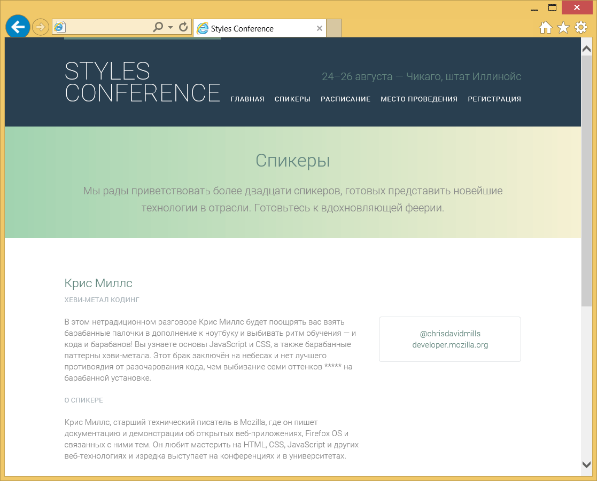

Создание списков
Списки являются частью повседневной жизни. Список дел определяет что сделано. Навигационные маршруты предлагают пошаговый список направлений. Для рецептов требуется список ингредиентов и список инструкций. Списки встречаются практически везде, так что легко понять, почему они также популярны в Интернете.
Когда мы хотим использовать список на сайте, HTML предлагает три разных типа на выбор: маркированный, нумерованный и список описаний. Какой тип списка выбрать для использования и применять ли список вообще — зависит от содержимого и семантически наиболее подходящего варианта для его отображения.
В дополнение к трём разным типам списков доступных в HTML есть несколько путей для стилизации этих списков через CSS. Например, мы можем выбрать, какой тип маркера указать для списка. Маркер может быть квадратным, круглым, числом, буквой или, возможно, отсутствовать. Кроме того, мы можем решить, как должен отображаться список — по вертикали или горизонтали. Все эти варианты играют важную роль при стилизации наших веб-страниц.
Маркированные списки
Маркированный или неупорядоченный список — это просто список связанных элементов, для которых порядок не имеет значения. Создание маркированного списка в HTML осуществляется с помощью блочного элемента списка <ul>. Каждый отдельный пункт в списке размечается с помощью элемента <li>.
По умолчанию, большинство браузеров добавляет вертикальный margin и левый padding к элементу <ul>, а перед каждым элементом <li> ставит однотонную точку. Эта точка называется маркером списка и может быть изменена с помощью CSS.
<ul>
<li>Оранжевый</li>
<li>Зелёный</li>
<li>Синий</li>
</ul>Демонстрация маркированного списка
Нумерованные списки
Нумерованный или упорядоченный список элементов <ol> очень похож на маркированный список, отдельные пункты списка создаются таким же образом. Основным различием между списками является то, что для упорядоченного списка важен порядок представления пунктов.
Поскольку порядок имеет значение, вместо точки в качестве маркера по умолчанию в нумерованном списке применяются номера.
<ol>
<li>Пройдите по Абрикосовой улице</li>
<li>Сверните на Виноградную</li>
<li>Остановитесь на Тенистой улице</li>
</ol>Демонстрация нумерованного списка
У нумерованных списков также есть доступные для них уникальные атрибуты, включая start и reversed.
Атрибут start
Атрибут start определяет номер, с которого должен начинаться нумерованный список. По умолчанию списки начинаются с 1, однако могут возникнуть ситуации, когда список должен начинаться с 30 или с другого числа. Когда мы используем атрибут start для элемента <ol>, то можем точно определить, с какого номера должен начинаться отсчёт нумерованного списка.
Атрибут start принимает только целые значения, хотя в нумерованных списках могут применяться разные системы нумерации, например, римские числа.
<ol start="30">
<li>Пройдите по Абрикосовой улице</li>
<li>Сверните на Виноградную</li>
<li>Остановитесь на Тенистой улице</li>
</ol>Демонстрация атрибута start
Атрибут reversed
Атрибут reversed при добавлении к элементу <ol> позволяет списку отображаться в обратном порядке. Список из пяти пунктов пронумерованных от 1 до 5 может быть задан обратно и нумероваться от 5 до 1.
Атрибут reversed является логическим атрибутом и как таковой он не принимает никакого значения. Он может быть истиной, либо ложью. Ложь является значением по умолчанию, значение становится истинным, когда атрибут reversed появляется у элемента <ol>.
<ol reversed>
<li>Пройдите по Абрикосовой улице</li>
<li>Сверните на Виноградную</li>
<li>Остановитесь на Тенистой улице</li>
</ol>Демонстрация атрибута reversed
Атрибут value
Атрибут value может применяться к отдельным элементам <li> в нумерованном списке, чтобы изменить его значение в списке. Номер любого пункта списка, который появляется ниже пункта списка с атрибутом value, будет пересчитан соответственно.
В качестве примера, если у второго пункта списка атрибут value задан как 9, номер этого пункта списка будет выводиться, как если бы он был девятым. Все последующие пункты списка будут пронумерованы от 9.
<ol>
<li>Пройдите по Абрикосовой улице</li>
<li value="9">Сверните на Виноградную</li>
<li>Остановитесь на Тенистой улице</li>
</ol>Демонстрация атрибута value
Списки описания
Другой тип списка который вы видели в Интернете (но не так часто, как маркированные или нумерованные списки) — это список описаний. Такие списки применяются для обозначения нескольких терминов и их описаний, как в глоссарии, к примеру.
Создание списка описания в HTML происходит с помощью блочного элемента <dl>. Вместо использования элемента <li> для разметки пунктов списка, список описания требует два блочных элемента: <dt> для термина и <dd> для описания.
Список описания может содержать множество терминов и описаний, один за другим. Кроме того, такой список может содержать несколько терминов на одно описание, а также несколько описаний на термин. Один термин может иметь несколько значений и допускать несколько описаний. И наоборот, одно описание может подходить к нескольким терминам.
При добавлении списка описания элемент <dt> должен идти до элемента <dd>. Термин и описание, которое следует непосредственно за ним, связаны друг с другом. Таким образом, порядок этих элементов имеет важное значение.
По умолчанию, элемент <dl> включает вертикальные отступы, подобно элементам <ul> и <ol>. Кроме того, элемент <dd> включает в себя по умолчанию левый margin.
<dl>
<dt>учёба</dt>
<dd>Посвящение времени и внимания для получения знаний по преподаваемому предмету, особенно с помощью книг.</dd>
<dt>проект</dt>
<dd>Представленный план или чертёж, который показывает, как будет выглядеть и функционировать здание, одежда или другой предмет, прежде чем он будет построен или сделан.</dd>
<dd>Существующие цели, планы или намерения до их воплощения или реализации в материальном объекте.</dd>
<dt>бизнес</dt>
<dt>работа</dt>
<dd>Регулярные занятия человека, профессия или ремесло.</dd>
</dl>Демонстрация списка описания
Вложенные списки
Особенность, которая делает списки очень мощными — это возможность вложения. Каждый список может быть помещён в другой список и они могут быть вложены неоднократно. Но возможность вкладывать списки бесконечно не даёт свободу делать это. Списки должны быть зарезервированы специально там, где они сохраняют наиболее семантическое значение.
Трюк с вложением списков заключается в том, что следует знать, где начинается и заканчивается каждый список и пункт списка. Говоря конкретно о маркированных и нумерованных списках, единственным элементом, который может находиться непосредственно внутри <ul> и <ol> является элемент <li>. Повторим — единственным элементом, который мы можем поставить как прямой потомок элементов <ul> и <ol>, является <li>.
Тем не менее, внутри элемента <li> может быть добавлен стандартный набор элементов, включая любые элементы <ul> или <ol>.
Чтобы вложить список — перед закрытием пункта списка начните новый список. После того, как вложенный список завершён и закрыт, закройте обрамляющий пункт списка и продолжите с первоначального списка.
<ol>
<li>Погулять с собакой</li>
<li>Сложить бельё</li>
<li>
Сходить в магазин и купить:
<ul>
<li>Молоко</li>
<li>Хлеб</li>
<li>Сыр</li>
</ul>
</li>
<li>Подстричь газон</li>
<li>Приготовить ужин</li>
</ol>Демонстрация вложенных списков
Поскольку вложенные списки могут немного запутать и отобразить нежелательные стили, если они сделаны неправильно — давайте быстро их просмотрим. Элементы <ul> и <ol> могут содержать только элементы <li>. Элемент <li> может содержать любой обычный элемент, какой пожелаете. Однако элемент <li> должен быть прямым потомком либо элемента <ul>, либо <ol>.
Стоит также отметить, что когда списки вложены внутрь других списков, их маркеры будут меняться в зависимости от глубины вложения. В предыдущем примере маркированный список, вложенный в нумерованный, использует в качестве маркеров кружок вместо точки. Это изменение происходит потому, что маркированный список вложен на один уровень в нумерованном списке.
К счастью, мы можем управлять, как маркеры пунктов списка выглядят на любом уровне, что мы и рассмотрим дальше.
Стилизация пунктов списка
Маркированные и нумерованные списки используют маркеры пунктов списка по умолчанию. Для маркированных списков это, как правило, однотонные точки, в то время как для нумерованных списков, как правило, применяются числа. С помощью CSS стиль и положение этих маркеров можно настраивать.
Свойство list-style-type
Свойство list-style-type используется для установки содержимого маркера пунктов списка. Доступные значения находятся в диапазоне от квадратиков и десятичных чисел до армянской нумерации и стиль в CSS может быть добавлен к элементам <ul>, <ol> или <li>.
Любое значение свойства list-style-type может быть добавлено к маркированному или нумерованному списку. Имея это в виду, можно использовать нумерацию в маркированном списке и не числовые маркеры в нумерованном списке.
HTML
<ul>
<li>Оранжевый</li>
<li>Зелёный</li>
<li>Синий</li>
</ul>CSS
ul {
list-style-type: square;
}Демонстрация свойства list-style-type
Значения list-style-type
Как упоминалось ранее, свойство list-style-type содержит горстку разных значений. В следующей таблице представлены эти значения, а также соответствующее им содержимое.
| Значение list-style-type | Содержимое |
|---|---|
| none | Нет пунктов списка |
| disc | Однотонный кружок |
| circle | Пустая окружность |
| square | Однотонный квадрат |
| decimal | Десятичные числа |
| decimal-leading-zero | Десятичные числа начинающиеся с нуля |
| lower-roman | Строчные римские числа |
| upper-roman | Заглавные римские числа |
| lower-greek | Строчные греческие числа |
| lower-alpha / lower-latin | Строчные латинские буквы |
| upper-alpha / upper-latin | Заглавные латинские буквы |
| armenian | Традиционная армянская нумерация |
| georgian | Традиционная грузинская нумерация |
Использование изображения в качестве маркера списка
Может наступить время, когда значений по умолчанию для свойства list-style-type не хватит и мы пожелаем задать свой собственный маркер списка. Чаще всего это делается путём размещения фонового изображения для каждого элемента <li>.
Процесс включает в себя удаление любого значения свойства list-style-type по умолчанию и добавление фонового изображения и полей для элемента <li>.
Подробнее — значение none свойства list-style-type удалит существующие маркеры списка. Свойство background задаст фоновое изображение вместе с его положением и повтором, если необходимо. А свойство padding обеспечит пространство слева от текста для фоновой картинки.
HTML
<ul>
<li>Оранжевый</li>
<li>Зелёный</li>
<li>Синий</li>
</ul>CSS
li {
background: url("arrow.png") 0 50% no-repeat;
list-style-type: none;
padding-left: 12px;
}Демонстрация изображения в качестве маркера
Свойство list-style-position
По умолчанию маркеры списка располагаются слева от содержимого в элементе <li>. Такой стиль позиционирования описывается как outside, это означает, что всё содержимое будет отображаться непосредственно справа, за пределами маркера списка. С помощью свойства list-style-position мы можем изменить значение по умолчанию outside на inside или inherit.
Значение outside размещает маркер списка слева от элемента <li> и не позволяют любому содержимому обтекать ниже этот маркер. Значение inside (которое редко используется и можно увидеть) размещает маркер списка в первой строке элемента <li> и позволяет содержимому обтекать маркер при необходимости.
HTML
<ul>
<li>Капкейки...</li>
<li>Обсыпка...</li>
</ul>CSS
ul {
list-style-position: inside;
}Демонстрация свойства list-style-position
Универсальное свойство list-style
Свойства списка, которые мы недавно обсудили, list-style-type и list-style-position, могут быть объединены в одно универсальное свойство list-style. В этом свойстве мы можем использовать одно или все значения свойств списка одновременно. Порядок этих значений должен быть: list-style-type, затем идёт list-style-position.
ul {
list-style: circle inside;
}
ol {
list-style: lower-roman;
}Горизонтальное отображение списка
Иногда мы хотим отобразить списки горизонтально, а не вертикально. Возможно, мы желаем разделить список на несколько колонок, чтобы построить список навигации или разместить несколько пунктов списка в один ряд. В зависимости от содержания и желаемого внешнего вида есть несколько способов для отображения списков в виде одной строки, например, путём принятия значения свойства display для элементов <li> как inline или inline-block или через свойство float.
Отображение списка
Самый быстрый способ отобразить список на одной строке — это задать элементам <li> свойство display со значением inline или inline-block. Это поставит все элементы <li> в одну строку с одинаковым промежутком между каждым пунктом списка.
Если промежутки между элементами <li> доставляют проблемы, то они могут быть удалены с помощью тех же методов, что мы обсуждали в уроке 5, «Позиционирование содержимого».
Намного чаще мы будем использовать значение inline-block вместо значения inline. Значение inline-block позволяет легко добавлять вертикальные отступы и другое пространство к элементам <li>, в то время как значение inline нет.
При изменении значения свойства display на inline или inline-block, маркер списка, будь то точка, число или другое, удаляется.
HTML
<ul>
<li>Оранжевый</li>
<li>Зелёный</li>
<li>Синий</li>
</ul>CSS
li {
display: inline-block;
margin: 0 10px;
}Демонстрация списка с inline-block
Списки с float
Изменение значение свойства display на inline или inline-block быстро, однако это удаляет маркеры списка. Если они необходимы, то добавление float к каждому элементу <li> является лучшим вариантом, чем изменение свойства display.
Установка для всех элементов <li> свойства float как left выровняет горизонтально все элементы <li> непосредственно рядом друг с другом без каких-либо промежутков между ними. Когда мы используем float для <li>, маркер списка отображается по умолчанию и будет располагаться поверх элемента <li> рядом с ним. Чтобы предотвратить отображение маркера списка поверх других элементов <li>, должны быть добавлены горизонтальный margin или padding.
HTML
<ul>
<li>Оранжевый</li>
<li>Зелёный</li>
<li>Синий</li>
</ul>CSS
li {
float: left;
margin: 0 20px;
}Демонстрация списка с float
Как и с любыми обтекаемыми элементами это нарушает поток страницы. Мы не должны забывать очищать float и возвращать страницу в обычный поток — наиболее распространённым методом через clearfix.
Пример навигационного списка
Мы часто разрабатываем и находим навигационные меню, в которых применяются неупорядоченные списки. Эти списки, как правило, располагаются горизонтально с помощью одного из двух методов, упомянутых ранее. Вот, к примеру, горизонтальное навигационное меню, размеченное с помощью неупорядоченного списка, в котором элементы <li> отображаются как inline-block.
HTML
<nav class="navigation">
<ul>
<li><a href="#">Профиль</a></li><!--
--><li><a href="#">Настройки</a></li><!--
--><li><a href="#">Уведомления</a></li><!--
--><li><a href="#">Выход</a></li>
</ul>
</nav>CSS
.navigation ul {
font: bold 11px "Helvetica Neue", Helvetica, Arial, sans-serif;
margin: 0;
padding: 0;
text-transform: uppercase;
}
.navigation li {
display: inline-block;
}
.navigation a {
background: #395870;
background: linear-gradient(#49708f, #293f50);
border-right: 1px solid rgba(0, 0, 0, .3);
color: #fff;
padding: 12px 20px;
text-decoration: none;
}
.navigation a:hover {
background: #314b60;
box-shadow: inset 0 0 10px 1px rgba(0, 0, 0, .3);
}
.navigation li:first-child a {
border-radius: 4px 0 0 4px;
}
.navigation li:last-child a {
border-right: 0;
border-radius: 0 4px 4px 0;
}Демонстрация навигационного списка
На практике
Теперь, когда мы знаем, как создавать списки в HTML и CSS, давайте оглянемся на наш сайт Styles Conference и посмотрим, где мы могли бы использовать списки.
Сейчас навигационные меню в элементах <header> и <footer> на наших страницах состоят из нескольких ссылок. Эти элементы могут быть лучше организованы в виде неупорядоченного списка.
Использование неупорядоченного списка (через элемент <ul>) и пунктов списка (через элемент <li>) задаст структуру наших навигационных меню. Эти новые элементы, однако, будут отображать наши навигационные меню вертикально.
Мы собираемся изменить значение display для наших элементов <li> на inline-block, чтобы все они выравнивались в строке по горизонтали. Когда мы это сделаем, то также должны учесть пустое пространство слева между каждым элементом <li>. Вспоминая урок 5, «Позиционирование содержимого», мы знаем что открытие комментария HTML в конце элемента <li> и закрытие комментария в начале элемента <li> удалит это пространство.
Помня об этом, разметка для навигационного меню внутри нашего элемента <header> будет выглядеть так:
<nav class="nav primary-nav"> <ul> <li><a href="index.html">Главная</a></li><!-- --><li><a href="speakers.html">Спикеры</a></li><!-- --><li><a href="schedule.html">Расписание</a></li><!-- --><li><a href="venue.html">Место проведения</a></li><!-- --><li><a href="register.html">Регистрация</a></li> </ul> </nav>В том же духе, разметка для навигационного меню внутри нашего элемента <footer> будет выглядеть так:
<nav class="nav"> <ul> <li><a href="index.html">Главная</a></li><!-- --><li><a href="speakers.html">Спикеры</a></li><!-- --><li><a href="schedule.html">Расписание</a></li><!-- --><li><a href="venue.html">Место проведения</a></li><!-- --><li><a href="register.html">Регистрация</a></li> </ul> </nav>Не забывайте внести эти изменения во все наши HTML-файлы.
С нашим маркированным списком давайте удостоверимся, что пункты списка выровнены по горизонтали и слегка очистим их стили. Мы будем использовать существующий класс nav для указания наших новых стилей.
Начнём с того, чтобы все элементы <li> внутри какого-либо элемента со значением nav атрибута class отображались как inline-block, чтобы включить горизонтальные margin и чтобы можно было выравнивать элементы по вертикали.
Кроме того, мы воспользуемся псевдоклассом :last-child чтобы определить последний элемент <li> и сбросить его правый margin в 0. Это гарантирует, что любое горизонтальное пространство между элементами <li> и краем его родителя исчезнет.
В наш файл main.css, ниже стилей навигации добавим следующий CSS:
.nav li { display: inline-block; margin: 0 10px; vertical-align: top; } .nav li:last-child { margin-right: 0; }Вы наверное удивлены, почему наш список не включает каких-либо маркеров списка или стилей по умолчанию. Эти стили были удалены сбросом вверху нашего стиля. Если мы посмотрим на сброс, то увидим что элементы <ol>, <ul> и <li> включают в себя нулевые margin и padding, а для <ol> и <ul> значение list-style задано как none.
Меню навигации не единственное место, где мы будем использовать списки. Также применим их на некоторых наших внутренних страницах, включая страницу Спикеры. Давайте добавим несколько спикеров в нашу конференцию.
В файле speakers.html, чуть ниже раздела со вступлением, создадим новый раздел, где мы представим всех наших спикеров. Повторно задействуя некоторые существующие стили мы воспользуемся элементом <section> с классом row, чтобы обернуть всех наших спикеров и применить белый фон и поля за ними. Внутри элемента <section> мы добавим элемент <div> с классом grid чтобы выровнять по центру страницы наших спикеров и это позволит нам также включить несколько колонок.
Пока наш HTML ниже раздела со вступлением выглядит следующим образом:
<section class="row"> <div class="grid"> </div> </section>Внутри grid каждый спикер будет размечен с собственным элементом <section>, который включает две колонки. Первая колонка отмеряет две трети элемента <section> и будет размечена с помощью элемент <div>. Вторая колонка отмеряет оставшуюся треть элемента <section> и будет размечена с помощью элемента <aside>, а его содержимое вторично по отношению к спикеру и его речи.
Используя наши существующие классы col-2-3 и col-1-3, схема для раздела со спикерами будет выглядеть так:
<section id="shay-howe"> <div class="col-2-3"> ... </div><!-- --><aside class="col-1-3"> ... </aside> </section>Здесь есть несколько пунктов, на которые стоит обратить внимание. Первое, каждый элемент <section> для каждого спикера включает в себя атрибут id с именем спикера в качестве значения. Позже, когда мы создадим расписание для нашей конференции, эти атрибуты id послужат якорями, которые позволят нам связать расписание с профилем спикера.
Кроме того, закрывающий тег элемента <div> сопровождается открытием комментария в HTML и открывающим тегом элемента <aside>, которому предшествует закрытие комментария. Поскольку классы для колонок будут отображать эти элементы как строчно-блочные, мы удаляем пустое пространство, которое появится между ними.
Внутри колонки 2/3 размеченный элементом <div> мы будем использовать несколько заголовков и абзацев, чтобы показать имя спикера, краткую биографию, название доклада и его анонс.
Учитывая это содержимое, раздел спикера будет выглядеть следующим образом:
<section id="shay-howe"> <div class="col-2-3"> <h2>Шэй Хоу</h2> <h5>Лучше меньше, да лучше: как ограничения культивируют рост</h5> <p>Установив ограничения, мы заставляем себя...</p> <h5>О спикере</h5> <p>Как дизайнер и фронтенд-разработчик, Шэй...</p> </div><!-- --><aside class="col-1-3"> ... </aside> </section>В колонку 1/3 размеченной элементом <aside> мы собираемся добавить элемент <div> с классом speaker-info. Мы будем использовать элемент <div>, потому что добавим стили к этому элементу в ближайшее время.
Прежде чем перейти к каким-либо стилям, давайте добавим неупорядоченный список в элемент <div>, который включает в себя пункты списка, имеющие отношение к спикеру.
Теперь наш HTML для спикера будет выглядеть следующим образом:
<section id="shay-howe"> <div class="col-2-3"> <h2>Шэй Хоу</h2> <h5>Лучше меньше, да лучше: как ограничения культивируют рост</h5> <p>Установив ограничения, мы заставляем себя...</p> <h5>О спикере</h5> <p>Как дизайнер и фронтенд-разработчик, Шэй...</p> </div><!-- --><aside class="col-1-3"> <div class="speaker-info"> <ul> <li><a href="https://twitter.com/shayhowe">@shayhowe</a></li> <li><a href="http://learn.shayhowe.com/">learn.shayhowe.com</a></li> </ul> </div> </aside> </section>Когда элемент <div> с классом speaker-info готов, мы можем добавить к нему некоторые стили.
Начнём с добавления нового раздела в наш файл main.css для стилей страницы Спикеры. В нём добавим однопиксельную сплошную рамку с радиусом 5 пикселей вокруг любого элемента с классом speaker-info.
Далее добавим верхний margin 88 пикселей, чтобы поместить элемент на той же вертикальной строке, что и первый абзац докладчика, а также добавим 22 пикселя по вертикали для padding, чтобы обеспечить место для вложенного маркированного списка.
Наконец, выровняем по центру весь текст внутри элемента.
В целом, наш CSS для класса speaker-info выглядит следующим образом:
/* ======================================== Спикеры ======================================== */ .speaker-info { border: 1px solid #dfe2e5; border-radius: 5px; margin-top: 88px; padding: 22px 0; text-align: center; }Остановимся на минутку и разберём, почему мы используем здесь элемент <div> и соответствующие стили.
Мы размещаем элемент <div> внутри элемента <aside> со значением col-1-3 у атрибута class, потому что хотим чтобы padding, унаследованный от класса col-1-3, был за пределами border у элемента <div>. Вскоре мы включим изображение внутрь элемента <div> наряду со списком, поэтому мы создали элемент <div>, а не применили эти стили непосредственно к элементу <ul>.
По мере добавления больше и больше спикеров на страницу мы хотим убедиться, что они остаются на равном расстоянии друг от друга по вертикали. Чтобы сделать это, мы создадим набор правил для класса speaker, который включает в себя нижний margin 44 пикселя, таким образом:
.speaker { margin-bottom: 44px; }Мы можем применить данный класс к <section> для каждого спикера, при условии, что это не последний спикер. Мы опускаем этот класс для последнего спикера, так как не хотим создать ненужные отступы перед нашим элементом <footer>. С более чем одним спикером наша разметка будет выглядеть так:
<section class="row"> <div class="grid"> <section class="speaker" id="chris-mills"> <div class="col-2-3"> ... </div><!-- --><aside class="col-1-3"> ... </aside> </section> <section id="shay-howe"> <div class="col-2-3"> ... </div><!-- --><aside class="col-1-3"> ... </aside> </section> </div> </section>Обратите внимание на первый элемент <section> со спикером Крис Миллс. Раздел включает в себя атрибут class со значением speaker, который вертикально отделяет его от моего раздела, Шэя Хоу. Последний элемент <section> снова мой и он не включает в себя класс speaker чтобы сохранить его на нужном расстоянии от элемента <footer>.
Наше меню навигации в настоящее время завершено и страница Спикеры начала принимать свою форму.

Рис. 8.01. Наша страница Спикеры после обновления навигационных меню и добавления колонки
Демонстрация и исходный код
Ниже вы можете просмотреть сайт Styles Conference в его нынешнем состоянии, а также скачать исходный код сайта на данный момент.
Просмотр сайта Styles Conference или Скачать исходный код
Резюме
Списки довольно часто применяются в HTML, нередко в местах, которые не явны или очевидны. Главное, насколько это возможно, использовать их семантически и там, где они подходят лучше всего.
Подводя итоги, в этом уроке мы рассмотрели следующее:
- как создать маркированный, нумерованный список и список описаний;
- как правильно вкладывать одни списки внутрь других;
- как изменить стиль маркера списка и его положение;
- как использовать фоновое изображение вместо маркера списка;
- как горизонтально отобразить список через display и float.
Теперь, когда мы знаем, как добавить списки на наши страницы, давайте также включим медиа-контент. В следующей главе мы погрузимся во встраивание медиа, таких как изображения, аудио и видео.
Ресурсы и ссылки
- Styling HTML Lists with CSS via Smashing Magazine
- List Style Type via Mozilla Developer Network
- CSS Design: Taming Lists via A List Apart
См. также

Все материалы сайта доступны по лицензии Creative Commons «Attribution-NonCommercial» («Атрибуция — Некоммерческое использование») 4.0 Всемирная, если не указано иное.